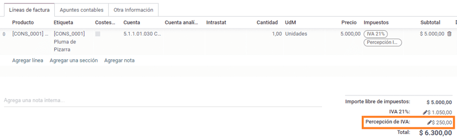
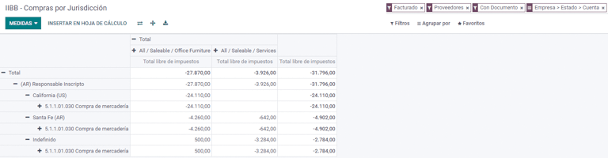

阿根廷¶
网络研讨会¶
您可以在下面找到带有本地化的一般说明以及如何配置它的视频。
配置¶
模块安装¶
Install the following modules to get all the features of the Argentinean localization:
名称 |
技术名称 |
描述 |
|---|---|---|
Argentina - Accounting |
|
Default fiscal localization package, which represents the minimal configuration to operate in Argentina under the AFIP regulations and guidelines. |
Argentinean Accounting Reports |
|
VAT Book report and VAT summary report. |
Argentinean Electronic Invoicing |
|
包括根据 AFIP 规定，通过网络服务生成电子发票的所有技术和功能要求。 |
|
（可选）允许用户在电子商务结账表单中查看标识类型和 AFIP 责任，以便创建电子发票。 |
Configure your company¶
安装本地化模块后，第一步是设置公司数据。除基本信息外，需要填写的一个关键字段是 AFIP 责任类型，它代表公司的财政义务和结构。

科目表¶
在会计中，有三种不同的 会计账目总表 软件套装可供选择。它们基于公司的 AFIP 责任类型，并考虑到不需要大量账户及具有复杂财务要求的公司之间的差异：
Monotributista (227 种账户)；
IVA Exento (290 种账户)；
Responsable Inscripto (298 种账户).

配置主数据¶
Electronic Invoice Credentials¶
环境¶
AFIP 基础设施复制在两个独立的环境中：测试 和 正式运行。
提供测试环境是为了让公司测试其数据库，直到他们准备好进入 正式运行 环境。由于这两个环境完全相互隔离，其中一个实例的数字证书在另一个实例中无效。
要选择数据库环境，请进入 ，然后选择 Prueba（测试） 或 Produccion（正式运行） 。

AFIP 认证¶
电子发票和其他 AFIP 服务，可与 AFIP 提供的 网络服务（WS） 协同工作。
为了启用与 AFIP 的通信，第一步是要求 数字证书 （如无）。
生成证书签名请求（Odoo）。选择此选项后，将生成一个扩展名为 `.csr`（证书签名请求）的文件，用于在 AFIP 门户中请求证书。

生成证书（AFIP）。访问 AFIP 门户网站，并按照`本文档 <https://drive.google.com/file/d/17OKX2lNWd1bjUt3NxfqcCKBkBh-Xlpo-/ view>`_ 中描述的说明获取证书。
上传证书和私钥（Odoo）。证书生成后，使用 Certificado 字段旁边的 铅笔 图标将其上传到 Odoo，并选择相应文件。

小技巧
如果您需要配置规格认证，请参阅 AFIP 官方文档：规格认证。此外，Odoo 还允许用户在本地测试电子发票，而无需规格认证。本地测试时，沟通栏中将显示以下消息：
往来单位¶
标识类型和增值税¶
作为阿根廷本地化的一部分，由 AFIP 定义的文件类型现在可在**合作伙伴表格**中使用。对于大多数交易来说，信息是必要的。默认情况下有 6 种 识别类型 可用，还有 32 种非有效类型。

注解
Odoo 中包含 AFIP 定义的:guilabel:`标识类型`的完整列表，但只有常用的标识类型是有效的。
AFIP 责任类型¶
在阿根廷，与客户和供应商相关的单据类型和相应交易由 AFIP 责任类型定义。该字段应在**合作伙伴表**中定义。

税¶
作为本地化模块的一部分，税款会自动与相关财务账户和配置一起创建，例如，:guilabel:`Responsable Inscripto`的 73 种税款。

税务类型¶
Argentina has several tax types, the most common ones are:
VAT：这是常规增值税，可以有不同的百分比；
预提：是应用于发票上的一种预付税款；
保留金：是应用于付款上的一种预付税款；
特别税项¶
阿根廷的某些税项并非所有公司都常用，这些不常用的选项在 Odoo 中默认被标记为未激活。在创建新税项之前，请务必检查该税项是否已被列为未激活税项。

文件类型¶
在一些拉丁美洲国家/地区，例如阿根廷，某些会计交易（如发票和供应商账单）根据政府税务机构定义的文件类型进行分类。在阿根廷，AFIP <https://www.afip.gob.ar/> 是负责定义此类交易的政府税务机构。
文档类型是在列出账户流水的打印报告、发票和日记账条目中需要清晰显示的重要信息。
每种文件类型在其指定的日记账中都有唯一的序列。作为本地化的一部分，文档类型包括文档适用的国家/地区（安装本地化模块时会自动创建此数据）。
默认情况下，文档类型 所需的信息已包含在内，因此用户无需在此视图中填写任何内容：

注解
有几种 文件类型 类型默认未生效，但可根据需要激活。
信¶
For Argentina, the Document Types include a letter that helps indicate the type of transaction or operation. For example, when an invoice is related to a(n):
B2B transaction, a document type A must be used;
B2C transaction, a document type B must be used;
Exportation Transaction, a document type E must be used.
The documents included in the localization already have the proper letter associated with each Document Type, so there is no further configuration necessary.

Use on invoices¶
The Document Type on each transaction will be determined by:
The journal entry related to the invoice (if the journal uses documents);
The onditions applied based on the type of issuer and receiver (e.g., the type of fiscal regime of the buyer and the type of fiscal regime of the vendor).
日记账¶
在阿根廷本地化中，日记账可根据其用途和内部类型采用不同的方法。要配置日记账，请访问 。
对于销售和采购日记账，可激活 使用文件 选项，该选项可启用与发票和供应商账单相关的 文件类型`列表。有关发票的更多详情，请参阅 :ref:`2.3 文档类型<document-types>。
如果销售或采购日记账没有激活 :guilabel:`使用文件`选项，它们将无法生成财务发票，这意味着它们的用例将主要限于监控与内部控制流程有关的账户变动。
AFIP 信息（又称 AFIP 销售点）¶
AFIP POS 系统 是一个仅在**销售**日记账中可见的字段，定义了用于管理创建日记账的交易的 AFIP POS 类型。
AFIP POS 定义如下：
与网络服务相关的文件类型序列；
电子发票文件的结构和数据。
网站服务¶
**网站服务**可帮助生成不同用途的发票。以下是几个可供选择的选项：
wsfev1:电子发票：最常见的服务，用于生成 A、B、C、M 文档类型的发票，每个项目无明细；
wsbfev1:电子财政债券：适用于那些开具资本货物发票，并希望获得经济部授予电子税务债券优惠的人。详情请访问 :`财政债券 <https://www.argentina.gob.ar/acceder-un-bono-por-fabricar-bienes-de-capital>`___；
wsfexv1: Electronic Exportation Invoice: is used to generate invoices for international customers and transactions that involve exportation processes, the document type related is type “E”.

Here are some useful fields to know when working with web services:
AFIP POS Number: is the number configured in the AFIP to identify the operations related to this AFIP POS;
AFIP POS Address: is the field related to the commercial address registered for the POS, which is usually the same address as the company. For example, if a company has multiple stores (fiscal locations) then the AFIP will require the company to have one AFIP POS per location. This location will be printed in the invoice report;
Unified Book: when the AFIP POS System is Preimpresa, then the document types (applicable to the journal) with the same letter will share the same sequence. For example:
发票：FA-A 0001-00000002；
Credit Note: NC-A 0001-00000003;
Debit Note: ND-A 0001-00000004.
序列 Sequences¶
For the first invoice, Odoo synchronizes with the AFIP automatically and displays the last sequence used.
注解
创建 采购日记账 时，可以定义是否与单据类型相关。如果选择使用单据，则无需手动关联单据类型序列，因为单据编号由供应商提供。
用法和测试¶
发票¶
一旦创建并正确配置了合作伙伴和日记账，以下信息即适用于发票创建。
Document type assignation¶
选择合作伙伴后，文档类型 字段将根据 AFIP 文档类型自动填写：
Invoice for a customer IVA Responsable Inscripto, prefix A is the type of document that shows all the taxes in detail along with the customer’s information.

Invoice for an end customer, prefix B is the type of document that does not detail the taxes, since the taxes are included in the total amount.

Exportation Invoice, prefix E is the type of document used when exporting goods that shows the incoterm.

Even though some invoices use the same journal, the prefix and sequence are given by the Document Type field.
The most common Document Type will be defined automatically for the different combinations of AFIP responsibility type but it can be updated manually by the user before confirming the invoice.
Electronic invoice elements¶
使用电子发票时，如果所有信息都正确无误，那么发票就会以标准方式入账，除非出现需要解决的错误。当错误信息弹出时，会同时显示需要注意的问题和建议的解决方案。如果错误持续存在，发票将保持草稿状态，直到问题得到解决。
发票入账后，与 AFIP 验证和状态有关的信息将显示在 AFIP 选项卡中，包括：
AFIP 授权：CAE 号码。
到期日期：向客户交付发票的截止日期（通常在生成 CAE 后的 10 天内）；
结果：`表示发票是否已经:guilabel:`被 AFIP 接受`和/或:guilabel:`AFIP 已接受但待观察。

发票税款¶
根据 AFIP 责任类型，在 PDF 报告中，增值税的应用方式可能会有所不同。
A. 不含税：在该情况下，需要在报告中明确指出征税金额。当客户的 AFIP 责任类型为**Responsable Inscripto**时，适用此条件；

B. 含税金额：这意味着税额已包含在产品价格、小计和总额中。该条件适用于客户具有以下的 AFIP 责任类型：
IVA Sujeto Exento；
最终消费者；
单一税负责人；
IVA liberado.

特殊用例¶
服务发票¶
对于包含 服务 的电子发票，AFIP 要求报告服务开始和结束日期，此信息可在 其他信息 选项卡中填写。

如果在发票验证前没有手动选择日期，则会自动用发票月份的第一天和最后一天来填写这些值。

出口发票¶
Invoices related to Exportation Transactions require that a journal uses the AFIP POS System Expo Voucher - Web Service so that the proper document type(s) can be associated.

When the customer selected in the invoice is configured with an AFIP responsibility type Cliente / Proveedor del Exterior - Ley N° 19.640, Odoo automatically assigns the:
Journal related to the exportation Web Service;
Exportation document type;
Fiscal position: Compras/Ventas al exterior;
Concepto AFIP: Products / Definitive export of goods;
Exempt Taxes.

注解
The Exportation Documents require Incoterms to be enabled and configured, which can be found in .
Fiscal bond¶
The Electronic Fiscal Bond is used for those who invoice capital goods and wish to access the benefit of the Electronic Tax Bonds granted by the Ministry of Economy.
For these transactions, it is important to consider the following requirements:
Currency (according to the parameter table) and invoice quotation;
Taxes;
Zone;
Detail each item;
Code according to the Common Nomenclator of Mercosur (NCM);
Complete description;
Unit Net Price;
Quantity;
Unit of measurement;
Bonus;
VAT rate.
电子贷记发票 MiPyme（FCE）¶
对于中小企业发票，有几种文件类型被归类为**MiPyME**，也称为**电子信用发票**（或西班牙语**FCE**）。这种分类建立了一种机制，可改善中小企业的融资条件，使其能够通过尽早收回向客户和/或供应商发放的信贷和应收账款来提高生产率。
对于这些交易，必须考虑以下要求：
特定文件类型（201、202、206 等）；
排放者应符合 AFIP 的 MiPyME 交易资格；
金额应大于 100,000 ARS；
银行账户类型 CBU 必须与用款人相关，否则发票将无法验证，并显示如下错误信息。

要设置 传输模式’，请进入设置并选择 :guilabel:`SDC 或 ADC。

要更改特定发票的 传输模式，请转至 其他信息 选项卡并在确认前更改。
注解
更改 传输模式 不会改变在 设置 中选择的模式。

When creating a Credit/Debit note related to a FCE document:
use the Credit and Debit Note buttons, so all the information from the invoice is transferred to the new Credit and Debit Note;
the document letter should be the same as than the originator document (either A or B);
the same currency as the source document must be used. When using a secondary currency there is an exchange difference if the currency rate is different between the emission day and the payment date. It is possible to create a credit/debit note to decrease/increase the amount to pay in ARS.

When creating a Credit Note we can have two scenarios:
the FCE is rejected so the Credit Note should have the field FCE, is Cancellation? as True; or;
the Credit Note, is created to annulate the FCE document, in this case the field FCE, is Cancellation? must be empty (false).

Invoice printed report¶
The PDF Report related to electronic invoices that have been validated by the AFIP includes a barcode at the bottom of the format which represents the CAE number. The expiration date is also displayed as it is a legal requirement.

Troubleshooting and auditing¶
For auditing and troubleshooting purposes, it is possible to obtain detailed information of an invoice number that has been previously sent to the AFIP. To retrieve this information, activate the developer mode, then go to the menu and click on the button Consult Invoice button in AFIP.


It is also possible to retrieve the last number used in AFIP for a specific document type and POS Number as a reference for any possible issues on the sequence synchronization between Odoo and AFIP.

供应商账单¶
Based on the purchase journal selected for the vendor bill, the Document Type is now a required field. This value is auto-populated based on the AFIP Responsibility type of Issuer and Customer, but the value can be changed if necessary.

The Document Number field needs to be registered manually and the format will be validated automatically. However, in case the format is invalid, a user error will be displayed indicating the correct format that is expected.

供应商账单号的结构与客户发票的结构相同，但用户使用以下格式输入单据顺序：文件前缀 - 字母 - 文件编号。
在 AFIP 中确认供应商账单号¶
由于大多数公司都有内部控制来验证供应商账单是否与 AFIP 有效文件关联，因此可在 中设置自动验证，并考虑以下级别：
Not available: the verification is not done (this is the default value);
Available: the verification is done. In case the number is not valid, it only displays a warning but still allows the vendor bill to be posted;
Required: the verification is done, and it does not allow the user to post the vendor bill if the document number is not valid.

在 Odoo 中验证供应商账单¶
With the vendor validation settings enabled, a new button shows up on the vendor bills inside of Odoo, labeled Verify on AFIP, which is located next to the AFIP Authorization code field.

In case the vendor bill cannot be validated in AFIP, a value of Rejected will be displayed on the dashboard and the details of the invalidation will be added to the chatter.

特殊用例¶
Untaxed concepts¶
有些交易包括不属于增值税基数的项目，如燃料和汽油发票。
在登记供应商账单时，将使用一个项目登记属于增值税基本税额的每种产品，并使用另一个项目登记免税概念的税额。

Perception taxes¶
The vendor bill will be registered using one item for each product that is part of the VAT base amount, and the perception tax can be added in any of the product lines. As a result, there will be one tax group for the VAT and another for the perception. The perception default value is always 0.10.
To edit the VAT perception and set the correct amount, you should use the Pencil icon that is the next to the Perception amount. After the VAT perception amount has been set, the invoice can then be validated.
Check management¶
To install the Third Party and Deferred/Electronic Checks Management module, go to
and search for the module by its technical name l10n_latam_check and click
the Activate button.

该模块可对日记账和付款进行必要的配置：
创建、管理和控制各类支票
优化*自有支票*和*第三方支票*的管理
轻松有效地管理自己和第三方支票的过期日期
阿根廷电子发票流程的所有配置完成后，还需要完成自有支票和第三方支票流程的某些配置。
Own checks¶
Configure the bank journal used to create your own checks by going to , selecting the bank journal, and opening the Outgoing Payments tab.
Checks should be available as a Payment Method. If not, click Add a line and type
Checksunder Payment Method to add themEnable the Use electronic and deferred checks setting.
注解
This last configuration disables the printing ability but enables to:
手动输入支票编号
Adds a field to allocate the payment date of the check

Management of own checks¶
Own checks can be created directly from the vendor bill. For this process, click on the Register Payment button.
On the payment registration modal, select the bank journal from which the payment is to be made and set the Check Cash-In Date, and the Amount.

注解
要管理当前支票，支票兑现日期 字段必须留空或填写当前日期。要管理递延支票，:guilabel:`支票兑现日期`字段必须设置为未来日期。
要管理现有的自有支票，请导航至 。该窗口显示关键信息，如需要支付支票的日期、支票总量和支票支付总金额。

需要注意的是，该列表预先筛选了尚未与银行对账单对账的支票，即尚未从银行扣款的支票，这可通过 与银行对账单匹配 字段进行验证。如果想查看所有自己的支票，请点击 X 符号删除 无银行匹配 筛选器。

Cancel an own check¶
要取消在 Odoo 创建的自有支票，请导航至 并选择要取消的支票，然后点击 作废支票 按钮。这将中断与供应商账单和银行对账单的对账，使支票处于**已取消**状态。

第三方支票¶
要使用第三方支票登记付款，需要配置两个特定的日记账。为此，请导航至 并创建两个新日记账：
第三方支票Rejected Third Party Checks
注解
如果您有多个销售点，需要为这些销售点创建日记账，您可以手动创建更多日记账。
要创建 第三方支票 日志，请单击 新建 按钮并进行以下配置：
输入
第三方支票作为 日记账名称择 现金 为 类型
在 日记账分录 选项卡中，设置 现金账户: 为
1.1.1.02.010 Cheques de Terceros，输入您选择的 简码，并选择 货币 。

可用的付款方式列在*付款*选项卡中：
对于新收到的第三方支票，进入 并选择 新的第三方支票。此方法用于创建*新的*第三方支票。
对于收入和支出的现有第三方支票，转到 并选择 现有第三方支票。在 付款 选项卡中重复相同步骤。此方法用于使用*现有*支票接收和/或支付供应商账单，以及内部转账。
小技巧
您可以删除在配置第三方支票日记账时默认出现的已有付款方式。

还需要创建和/或配置*被拒第三方支票*日记账。该日记账用于管理被拒付的第三方支票，可用于发送收款时被拒付的支票或来自供应商被拒付的支票。
要创建 被拒第三方支票 日志，请单击 新建 按钮并进行以下配置：
输入
被拒第三方支票作为 日记账名称择 现金 为 类型
在 日记账分录 选项卡中，设置 现金账户: 为
1.1.1.01.002 被拒第三方支票，输入您选择的 简码，并选择 货币
使用与*第三方支票*日记账相同的付款方式。
新的第三方支票¶
要为客户发票登记*新的*第三方支票，请单击 登记付款`按钮。在弹出窗口中，您必须选择 :guilabel:`第三方支票 作为付款登记的日记账。
选择 新的第三方支票 作为 付款方式，并填写 支票号码、付款日期`和 :guilabel:`支票银行。您可以选择手动添加 支票开具人增值税，但这将根据与发票相关的客户增值税号码自动填写。

现有第三方支票¶
要使用*现有*支票支付供应商账单，请单击 登记付款`按钮。在弹出窗口中，您必须选择 :guilabel:`第三方支票 作为付款登记的日记账。
选择 现有第三方支票 作为 付款方式，并从 支票 字段中选择支票。该字段显示所有**可用的现有支票**，可用于支付供应商账单。

使用**现有第三方支票**时，可以查看与之相关的操作。例如，您可以查看用于支付客户发票的第三方支票后来是否被用作支付供应商账单的现有第三方支票。
要执行此操作，请进入 或 字段中，点击 => 查看操作 查看支票的历史记录和变动情况。

菜单还显示与这些操作相关的重要信息，例如：
guilabel:
付款类型，用于区分是向供应商*发送*的付款，还是从客户*收到*的付款。当前登记支票的 日记账
与操作相关的**合作伙伴**（客户或供应商）。
Ecommerce electronic invoicing¶
Install the Argentinian eCommerce (l10n_ar_website_sale) module to
enable the following features and configurations:
Clients being able to create online accounts for eCommerce purposes.
Support for required fiscal fields in the eCommerce application.
Receive payments for sale orders online.
Generate electronic documents from the eCommerce application.
配置¶
Once all of the configurations are made for the Argentinian electronic invoice flow, it is also necessary to complete certain configurations to integrate the eCommerce flow.
Client account registration¶
要为客户账户配置网站，请遵循 结帐 文档中的说明。
自动开票¶
要配置您的网站在销售过程中生成电子文档，您可以通过导航至 并激活 开票 部分中的 自动开票 功能，以便在线付款确认后自动生成所需的电子文档。

由于 自动开票 功能需要确认在线付款才能生成文档，因此**必须**为相关网站配置 付款提供商。
产品¶
要让您的产品在确认在线付款时开具发票，请从 导航到所需产品。在 常规信息 选项卡中，将 发票政策 设置为 订购数量 并定义所需的 客户税费。
电子商务开票流程¶
完成上述配置后，客户就可以在*阿根廷电子商务*流程中完成以下必要步骤，在结账过程中输入财务字段。
国家/地区 字段设置为`阿根廷`，则可在结账过程中输入财务字段。输入财务数据后，购买流程就可以在相应的电子文档中完成。

当客户成功购买并付款后，将生成必要的发票，并在 发票打印报告 中说明相应的版面设计和财务印章。
参见
创建客户账户
Liquidity product direct sales¶
Liquidity product direct sales are used for sales involving third parties. For such sales, the seller and the proprietary company of the goods can each register their corresponding sales and purchases.
注解
Install the Argentinian Electronic Invoicing module (l10n_ar_edi) to
use this feature.
配置¶
Purchase journal¶
A purchase journal is needed to generate an electronic vendor bill with a document type Liquidity Product. This journal needs to be synchronized with the AFIP as it will be used to generate the liquidity product electronic document.
To modify the existing purchase journal or create a new one, navigate to . Then, select the existing purchase journal or click the New button, and fill in the following required information:
Type: select Purchase.
Use Documents: check this field to to be able select the electronic document type.
Is AFIP POS: check this field to be able to generate electronic documents.
AFIP POS System: select Electronic Invoice - Web Service from the drop-down menu in order to send the electronic document to AFIP via web service.
AFIP POS Number: is the number configured in the AFIP to identify the operations related to this AFIP POS.
AFIP POS Address: is the field related to the commercial address registered for the POS, which is usually the same address as the company. For example, if a company has multiple stores (fiscal locations) then the AFIP will require the company to have one AFIP POS per location. This location will be printed in the invoice report.

Sales journal¶
A sales journal is needed to register the invoice when a product is sold to a third party that will then sell the same product. This journal will not be synced with AFIP as the invoice will not be electronic.
To modify the existing sales journal or create a new one, navigate to . Then, selecting the sales journal or click the New button, and fill in the following required information:
Type: select Sales.
Use Documents: check this field on the journal to select the electronic document type (in this case the electronic invoice).

Invoicing flow¶
Once the configurations are all set, the Liquidity Product Vendor Bill will be generated by the company that is selling the product on behalf of another party. For example, a distributor of a specific product.
报告¶
As part of the localization installation, financial reporting for Argentina is available in the Accounting dashboard. To access these reports, navigate to .
To access the VAT book report, go to , click the (book), and select Argentinean VAT book (AR).
注解
The VAT book report can be exported as a .zip file by selecting it in the dropdown menu in the
top-left corner.
增值税摘要¶
This pivot table is designed to check the monthly VAT totals. This report is for internal use and is not sent to the AFIP.
IIBB - 各辖区的销售额¶
This pivot table allows you to validate the gross income in each jurisdiction. It serves as an affidavit for the corresponding taxes due but is not submitted to the AFIP.

IIBB - Purchases by jurisdiction¶
This pivot table allows you to validate the gross purchases in each jurisdiction. It serves as an affidavit for the corresponding taxes due but is not submitted to the AFIP.
